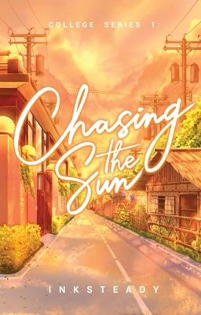
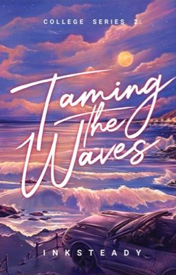
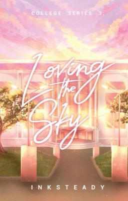
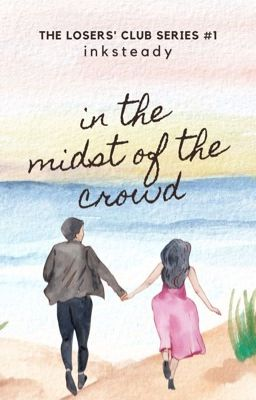
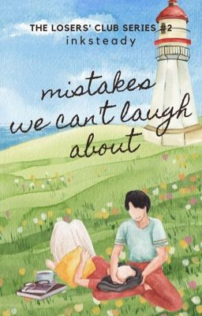
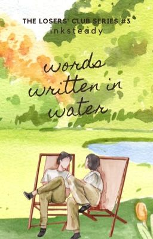
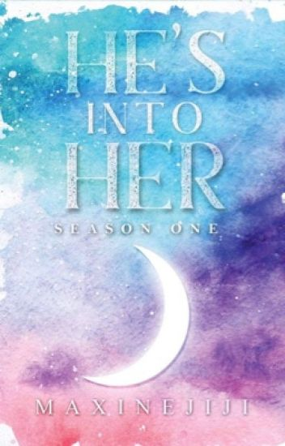
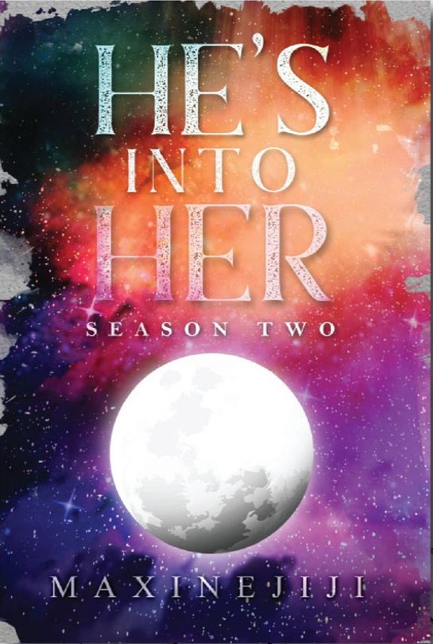
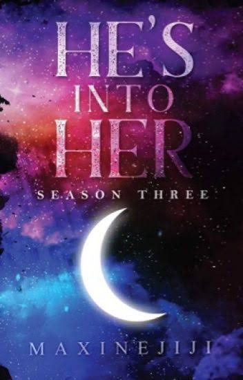

About Us
Main Characters
Elora Chin Valencia grew up in a toxic Christian family where she was viewed as the black sheep. Araw-araw ay ipinaparamdam sa kanya ng mundo na wala siyang lugar sa sarili niyang tahanan. She was a consistent dean's lister and an obedient daughter, which left her wondering what she had done so wrong to be disregarded as a speck of dust in the wind. They made her feel like she was just dirt, filling up the empty space. The one who would never have her own safe place.
Feeling all of this contributed to her endless suicidal ideations. Baka nga tama sila. Baka nga wala siyang halaga at kailanman ay hindi na sasaya. She almost believed that. She almost held onto that notion.
Not until she met the man in his BS Civil Engineering uniform and gorgeous grin, Troy Jefferson Dela Paz. He kissed her forehead, and her loud thoughts were silenced. Her demons calmed down. Her foes were defeated. For the first time in her life, she had proven her family wrong—a happy Elora Chin was possible. She was loved and well-taken care of. Troy embraced her sharp parts, not minding the wounds he might get. But fate had a lot of cruel things in store for her. Because when she thought she had reached the peak of happiness, she found herself drowning alone in the ocean she now called home, alone in her shame, alone with the waves she couldn't tame.
"When I thought I had reached the peak of happiness, I found myself drowning alone in the ocean I now called home..." - Elora Chin Valencia
Your walls are too high! I regret climbing it! You’re not even worth it! - Troy Jefferson Dela Paz
Inksteady: College Series
A heartfelt series about college dreams, deadlines, and the stories that shape us.
Bk 1 - Chasing the Sun
Solene Clemente, a struggling engineering student, found strength in her mother and best friend Duke—her secret love. Despite life’s hardships, their love kept her going. But like the sun she admired, she was meant to shine alone.
Bk 2 - Taming the Waves
Elora grew up unloved and broken. Troy made her feel whole—until fate left her drowning in the very love that once saved her.
Bk 3 - Loving the Sky
Reese would endure anything to win back Harvin. She waited, suffered, and hoped—only to realize some loves, like the sky, are meant to be admired from afar.
Inksteady: The Losers' Club Series
explores growth, healing, and the struggles of young love.
Bk 1 - In the Midst of the Crowd
Dawn Karsen Navarro adored singer Dior Kobe Gallardo, happy just hearing his voice from the farthest seat. One lucky day, she met him backstage and learned his story. But why did she return to the back row and become just a fan again after all they promised?Bk 2 - Mistakes We Can't Laugh About
You’ll laugh at past mistakes—awkward kisses, failed recitals, bad outfits. But some things stay painful. For Amari Sloane Mendoza, loving Leon Ysmael Zamora is one she can’t laugh at..
Bk 3 - Words Written in Water
Millicent Rae Velasco needed to write about Juancho Montero to graduate—but he rejected her. Desperate, she followed him, hoping only to finish her article. But in chasing his story, she unknowingly fell for him.
Maxinejiji:He's into Her Series
explores growth, healing, and the struggles of young love.
Bk 1 - He's into Her 1
Ako nga pala si Deib Lohr Enrile — dating bully. Nangako akong magbabago sa huling taon ko para sa babaeng gusto ko. Pero dumating si Maxpein del Valle, ang bagong estudyanteng palaban at hindi natakot sa’kin. Akala ko inis lang ‘to, pero bakit parang siya na ang bumabago sa pananaw ko sa buhay? Teka... gusto ko na ba siya?
Bk 2 - He's into Her 2
Naiinis ako kasi sinasabi ng best friend ko na may gusto ako kay Maxpein — na hindi ko aaminin dahil hindi kami bagay. Pero may lalaking umaapela kay Maxpein at yung ex niya, kaya mas lalo akong naiinis. Siguro nga, may gusto na talaga ako kay Maxpein!
Bk 3 - He's into Her 3r
Si Deib Lohr Enrile, in love na talaga! Kinikilig sa bawat tingin kay Maxpein, naging clingy at seloso. Mula bully, nagbago dahil sa kanya. Pero sobra ang pagmamahal, nagdulot ng drama at problema. At nang lumala pa, pati pamilya nila naapektuhan. Malalampasan kaya nila lahat ng ito?